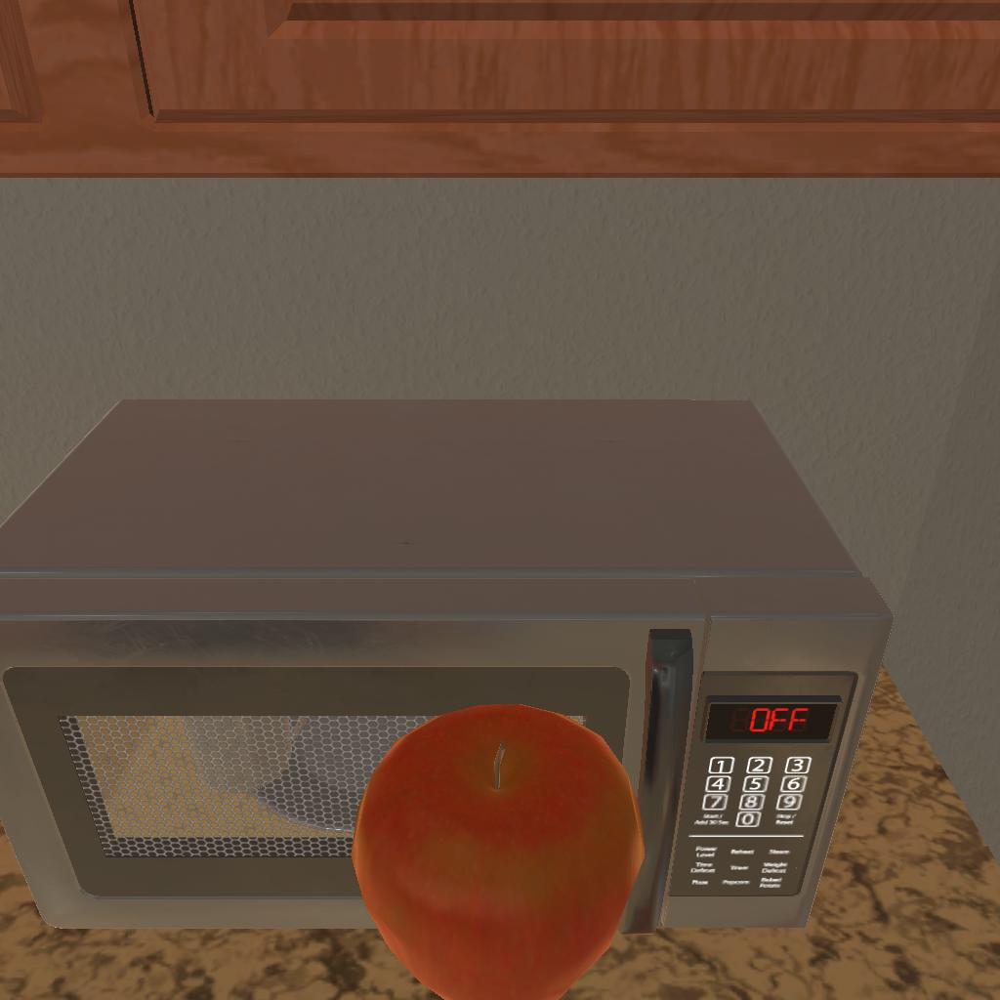

---------------------------------------------------------task: 19---------------------------------------------------------
--------------------------------------------------------------------------------------------------------------------------------------------------------------------
--------------------------------------------------------------------------------------------------------------------------------------------------------------------
Step:--------------------------------------------------------------------------17-------------------------------------------------------------------------------
----------------------------------------
VLM Prompt:
Image1:
**Instruction**
1. Analyze the provided image to identify all visible household objects, focusing on those relevant to the task description "cool some tomato and put it in microwave."
2. Use the analysis of the image and the task hint "The agent must find an object of the desired type, pick it up, go to a fridge, cool the object with the fridge, then find the correct location to place it, and put it down there. The agent does not need to use the fridge button or open the fridge to cool the object, and the agent just needs to do action that is "cool the object with the fridge"." to answer the question: what is the most reasonable action in the choices for the task description "cool some tomato and put it in microwave"?
4. Decide and write the answer using the template: The answer is: (i): , where i is the real number. If there is no desired object in the image, search every place based on **Initial Observation** to find the object. And if no one is exactly correct, choose a similar answer.
**Initial Observation**
You are in the middle of a room. Looking quickly around you, you can see cabinet (1-15), fridge (1), countertop (1-4), drawer (1-4), microwave (1), toaster (1), coffeemachine (1), garbagecan (1), sink (1), stoveburner (1-3), sinkbasin (1)
**Answer Choices**
(1): go to cabinet 2
(2): go to cabinet 3
(3): go to countertop 1
(4): go to cabinet 4
(5): go to cabinet 5
(6): go to cabinet 6
(7): go to cabinet 7
(8): go to drawer 1
(9): go to drawer 2
(10): go to cabinet 8
(11): go to drawer 3
(12): go to cabinet 9
(13): go to cabinet 10
(14): go to drawer 4
(15): go to cabinet 11
(16): go to toaster 1
(17): go to cabinet 12
(18): go to cabinet 13
(19): go to cabinet 14
(20): go to cabinet 15
(21): go to countertop 2
(22): go to coffeemachine 1
(23): go to garbagecan 1
(24): go to countertop 3
(25): go to countertop 4
(26): go to sink 1
(27): go to stoveburner 1
(28): go to stoveburner 2
(29): go to stoveburner 3
(30): go to sinkbasin 1
(31): open microwave 1
(32): close microwave 1
(33): put apple 1 in/on microwave 1
(34): heat apple 1 with microwave 1
(35): examine apple 1
(36): examine microwave 1
**Answer**
Let's think step by step by following the instructions.
----------------------------------------
----------------------------------------
Original Response:
The task involves cooling a tomato and then putting it in the microwave. In the image provided, we can see a microwave, and in front of the microwave, there is an apple. However, the task is to find a tomato, not an apple. Therefore, we need to search for the tomato based on the **Initial Observation** which lists all the possible locations where household objects can be found.
Since there is no tomato visible in the image, we need to look for it in the locations listed. The most likely locations to find a tomato would be in a fridge, cabinet, or countertop where food items are typically stored. As per the task hint, we do not need to use the fridge button or open the fridge to cool the object, so we can rule out the action of opening the fridge.
Based on the **Initial Observation**, the possible actions to find a tomato could be going to the fridge, a cabinet, or a countertop. Among the answer choices, there is no direct action to go to the fridge, so we need to choose the next best option.
The answer is: (3): go to countertop 1. This is the most reasonable action to start looking for a tomato, as countertops are common places to find such items. Once the tomato is found, we can then proceed to cool it and put it in the microwave as per the task description.
----------------------------------------
----------------------------------------
>>> Refine Original VLM Response and Get Pure Action: go to countertop 1
----------------------------------------
-----------------------------------------------------------------
Running time: 12.052937030792236 seconds
Total Money: 6.74867
-----------------------------------------------------------------
-----------------------------------------------------------------
Text Observation:You arrive at loc 4. On the countertop 1, you see a plate 1.
-----------------------------------------------------------------
UNSUCCEED